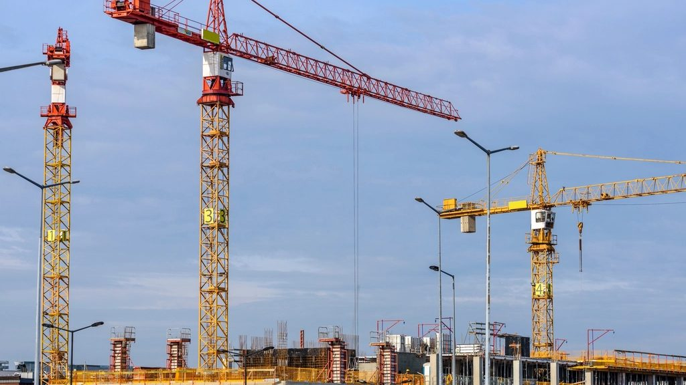

Proje Yönetimi
Proje yönetimi yazılımı ne zaman şart olur?
Mühendislik, taahhüt ve montaj işi yapan firmalarda proje planı çoğu zaman işin başında bir kez hazırlanır. Excel'de güzel bir çizelge çıkar, toplantıda gösterilir, sonra bir klasöre girer ve bir daha açılmaz. İş yine de yürür, çünkü proje müdürü her şeyi aklında tutar. Aynı anda üç dört iş yürümeye başladığında bu yöntem kişiyi de firmayı da yorar.

Plan neden rafta kalıyor?
Excel'deki çizelgeyi güncel tutmak başlı başına bir iştir. Sahadan haber gelir, biri dosyayı açar, tarihleri kaydırır, yeni halini e-postayla herkese gönderir. İki hafta sonra ortada dört ayrı sürüm dolaşır ve hangisinin doğru olduğunu kimse bilmez. Bir süre sonra çizelgeyi güncelleyen kişi de bırakır.
Bundan sonra projenin durumu telefonla öğrenilir. Sahaya "ne durumdayız" diye sorulur, "yarın bitiyor" cevabı gelir. Aynı cevap üç hafta boyunca gelebilir, çünkü işin yüzde kaçının bittiği hiçbir yerde yazmıyordur.
Müşteri tarafında da karşılığı var. Hakediş hazırlanacağı zaman kimin ne kadar iş yaptığı, hangi malzemenin sahaya indiği, hangi ek işin müşteriye onaylatıldığı belgelerden toplanmaya çalışılır. Eksik çıkan her belge, faturanın bir ay sonraya kalması demektir.
Küçük bir gecikme nasıl büyüyor?
Projede işler birbirine bağlıdır. Çizim onayı gecikince malzeme siparişi gecikir, malzeme geç gelince imalat kayar, imalat kayınca saha ekibi boş bekler ya da başka işe gönderilir. Baştaki bir haftalık kayma, teslimde üç dört hafta olarak karşınıza çıkar.

Bu zincirin kendisi kaçınılmaz, her projede bir şeyler kayar. Sorun, kaymanın geç fark edilmesi. Plan güncel değilse gecikmeyi teslim tarihine iki hafta kala öğrenirsiniz ve o noktada yapabileceğiniz tek şey fazla mesai yazıp müşteriden süre istemektir.
Aynı ekip, üç proje
Orta ölçekli bir firmada proje sayısı arttıkça asıl sıkışma insanlarda yaşanır. Aynı mühendis üç projede çizim yapıyordur, aynı saha ekibi iki şantiyeye söz verilmiştir. Her proje kendi içinde makul görünür, hepsini yan yana koyduğunuzda bazı haftalarda bir kişiden iki kişilik iş beklendiği ortaya çıkar.

Bu tabloyu Excel'de tutmak mümkün ama her proje değişikliğinde elle yeniden hesaplamak gerekir. Kimse yapmaz. Çakışma, ekip sahaya gidemediği gün anlaşılır.
Proje yönetimi yazılımı ne yapıyor?
Temelde planı canlı tutuyor. İşler, süreleri ve birbirine bağımlılıkları bir kez girilir. Bir iş geciktiğinde ona bağlı işlerin tarihi kendiliğinden kayar ve yeni teslim tarihi hemen görünür.
İlerleme sahadan girilir. Ekip şefi telefondan o gün yapılan işi işaretler, fotoğraf ekler, eksik malzemeyi not düşer. Ofisteki kişi durumu öğrenmek için kimseyi aramaz.
Belgeler projenin altında toplanır: sözleşme, çizimlerin son hali, müşteriyle yazışmalar, onaylanan ek işler, teslim tutanakları. Hakediş zamanı geldiğinde aranacak yer bellidir.
Son olarak bütün projeler tek ekranda yan yana durur. Hangisi zamanında, hangisi gecikiyor, hangi hafta kim fazla yüklü, bir bakışta görürsünüz. Bu ekran olduğunda haftalık toplantıda durum sormaya vakit harcanmaz, doğrudan ne yapılacağı konuşulur.
Hangi büyüklükte gerekli olur?
Tek projesi olan beş kişilik bir ekip için iyi tutulmuş bir Excel dosyası yeter. Gördüğümüz kadarıyla şu durumlarda yetmemeye başlıyor:
- Aynı anda üçten fazla proje yürüyorsa.
- Aynı kişiler ya da ekipler birden fazla projede çalışıyorsa.
- Sahadaki durumu öğrenmenin tek yolu telefon etmekse.
- Hakedişler belge toplanamadığı için gecikiyorsa.
- Geçen yıl kaç projenin geç teslim edildiğini bilmiyorsanız.
Başlarken dikkat edilecekler
En sık yapılan hata, ilk günden her ayrıntıyı sisteme girmeye çalışmak. Üç yüz satırlık bir iş listesini kimse güncel tutamaz. Proje başına on beş yirmi ana işle başlayın, ihtiyaç oldukça ayrıntıyı artırırsınız.
İkincisi, sahadan veri girişi çok kolay olmalı. Ekip şefinden her akşam bilgisayar başına oturmasını bekleyemezsiniz. Telefonda iki dokunuşla girilemeyen bilgi bir süre sonra hiç girilmez.
Üçüncüsü, yeni projeden başlayın. Yarısı bitmiş bir işi sisteme aktarmak zahmetlidir ve ekibi baştan soğutur. Sıradaki işi sistemde açın, eskiler kendi düzeninde bitsin.
Hangi aracın kullanılacağı bundan sonra gelen bir karar. Hazır proje yönetimi araçları var, ERP sistemlerinin proje modülleri var, firmaya özel yazılan çözümler var. Biz önce firmanın projeyi nasıl yürüttüğüne bakıyor, aracı ona göre öneriyoruz.
Sık sorulan sorular
Excel'de çizelgemiz var, neden yetmiyor?
Excel planı çizmek için yeterli. Zorlandığı yer planın güncel tutulması ve birden fazla projenin aynı anda görülmesi. Dosya tek kişinin bilgisayarında durduğu sürece sahadan gelen bilgi ona ulaşmaz.
Saha ekibi telefondan veri girer mi?
Girdiği bilgi az ve ekran sadeyse girer. Bizim tecrübemizde fotoğraf çekip yüklemek en kolay benimsenen adım oluyor, çünkü ekip zaten fotoğraf çekip WhatsApp'a atıyor.
Hazır bir araç mı, firmaya özel yazılım mı?
İşiniz standart bir akışa yakınsa hazır araç daha hızlı ve ucuz olur. Hakediş, teklif ve stokla bağlantı gerekiyorsa ya da işleyişiniz kendine özgüyse uyarlanmış bir sistem daha uzun ömürlü oluyor.
İşinizi kontrol altına alalım.
Bir siparişinizin yolunu birlikte çıkaralım; nerede zaman ve para kaybettiğinizi görelim.
İletişim bilgileri